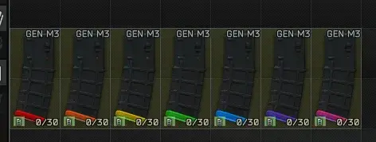

Eukyre's Magazine Baseplates
- Downloads
- 1,419
- Favourites
- 0
THIS MOD WILL NOT LOAD WITH ECHOES OF THE CITY – REQUISITIONS, AS THESE MAGS WILL BE INCLUDED THERE IN THE NEXT MAJOR UPDATE.
This mod adds various Magpul GEN M3 P-MAGs with coloured baseplates for easier identification when dropped or in the inventory; think mag tape, but a bit more permanent.
GIF credit goes to Kiyuno813, thanks!
THIS MOD WILL NOT LOAD WITH ECHOES OF THE CITY – REQUISITIONS, AS THESE MAGS WILL BE INCLUDED THERE IN THE NEXT MAJOR UPDATE.

Currently this mod contains:
- 5.56x45 30-Rounders in Red, Orange, Yellow, Green, Blue, Purple, Pink, FDE, Olive Drab & White.

zPlanned Additions:
- 5.56x45 40-rounders in all colours.
- 5.45x39 30-rounders in all colours.
- 7.62x39 30-rounders in all colours.
Version
1.0.1
- Fixed a load issue which resulted in the almighty doge cube, should work fine now.